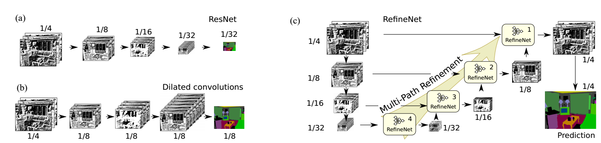
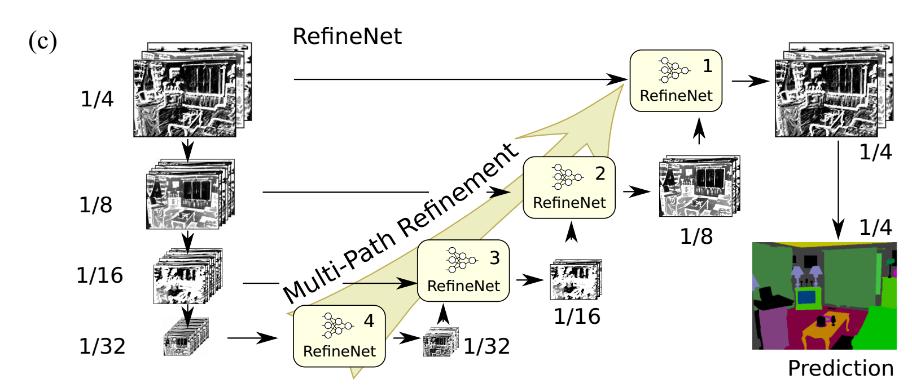
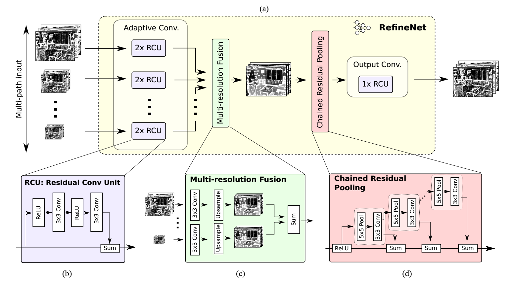
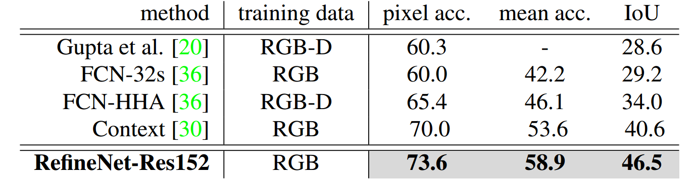
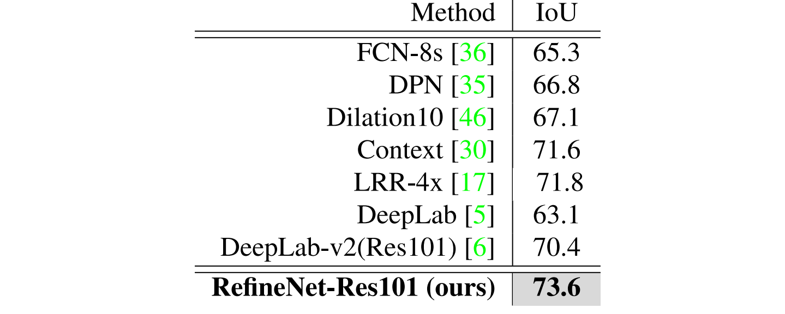
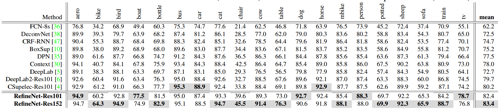
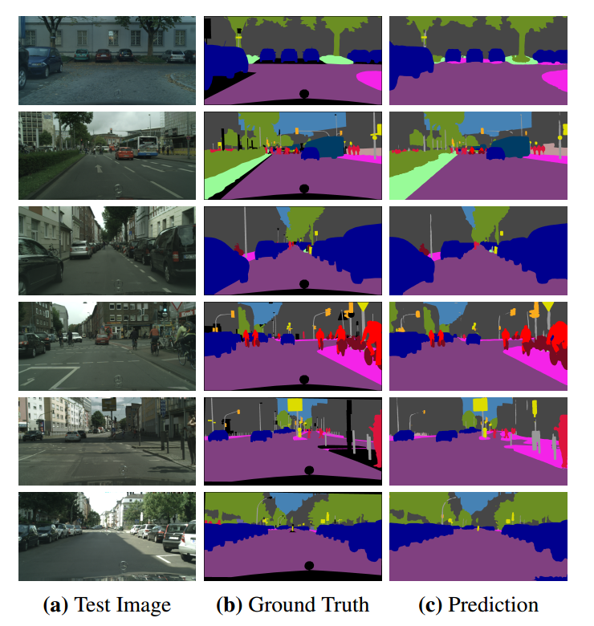

RefineNet: Multi-Path Refinement Networks for High-Resolution Semantic Segmentation
1.Abstract
最近，很多CNN网络在物体检测领域有很出色的表现，甚至在语义分割中也是首要选择，但是由于这些网络的pooling和卷积步长（convolution stride）的存在，feature map会越来越小，导致损失一些细粒度的信息（低层feature map有较丰富的细粒度信息，高层feature map则拥有更抽象，粗粒度的信息）。所以作者提出了refineNet。这种通用的多路径优化网络（a generic multi-path refinement network），它是基于Resnet的残差连接的思想设计的，可以充分利用下采样过程损失的信息，使dense prediction更为精准。同时也提出了 chained residual pooling，它能够以一种有效的方式来捕捉背景上下文信息。作者的模型在许多数据集上都取得了stateof-the-art的结果，特别是在PASCAL VOC 2012 dataset上，IOU为83.4分。
2.introduction
语义分割就是给图像中的每个像素点都分配一个类别的label。目前流行的深度网络，比如VGG，Resnet等，在做语义分割的时候，明显有一些局限性，多阶段的pooling和卷积操作，会损失许多精细的图像结构。所以对于分类问题而言，只需要深层的强语义信息（利用VGG和Resnet网络）就能表现较好，但是对于稠密预测问题，比如逐像素的图像分割问题，除了需要强语义信息之外，还需要高空间分辨率。
针对这些问题，很多方法都提出了解决方案：
- 针对pooling下采样过程中的分辨率损失，采用deconvolution恢复。但是却很难恢复位置信息。
- 使用空洞卷积保持分辨率，增大感受野，但是这么做有两个缺点：A.明显增加了计算代价。B.空洞卷积是一种粗糙的sub-sampling，因此容易损失重要信息。
- 通过skip connection来产生高分辨率的预测。
关于skip connection为什么有效可以参考博文
作者认为高级语义特征可以更好地进行分类识别，而低级别视觉特征有助于生成清晰、详细的边界。所以作者认为第3点是很好的思路。基于此，作者提出了RefineNet，其主要贡献为：
- 提出一种多路径refinement网络，称为RefineNet。这种网络可以使用各个层级的features，使得语义分割更为精准。
- RefineNet中所有部分都利用residual connections（identity mappings），使得梯度更容易短向或者长向前传，使段端对端的训练变得更加容易和高效。
- 提出了一种叫做chained residual pooling的模块，它可以从一个大的图像区域捕捉背景上下文信息。
3.Proposed Method

标准的多层CNN网络为图（a）所示，经过连续的下采样，丢失了很多信息。如图（b）所示的空洞卷积（Dilated convolutions ）通过atrous filters补救了（a）的缺点，但是这样子会增加参数，从而增加计算量。（c）所示为本文的结构，利用不同层次的细节信息，将不同阶段的卷积特征通过残差连接来融合，从而获得高分辨率预测。下面将信息的叙述（c）图所示的结构是怎么样的。
3.1Multi-Path Refinement
首先使用RefineNet的残差连接能让梯度在网络的深处和浅处都能很好的传播，保证了可以端到端的训练。我们将pre-trained ResNet （trained with ImageNet）（ps:关于使用如何使用pre-trained ResNet可以参考博文）分为四个blocks，并采用4个RefineNet的级联结构，每个RefinetNet都接收一个相应的Resnet block的输出和之前的RefineNet。如图(c)图所示。

该网络将在ImageNet上预训练的ResNet根据feature map的尺寸的大小分为4个block，外加一个带有4个RefineNet单元的4级联结构，每一个RefineNet单元与对应的block进行直接相连，同时四个RefineNet单元进行级联。同时，这种结构可以进行多种变换，一个单元可以接受所有block作为输入。每个RefeineNet单元的结构相同，但之间的参数并不相关，因此，每一个单元可以针对对应层次的细节进行调整。
根据上图c，从ResNet的block4开始，将RefineNet4与ResNet对用的block4进行直接连接。RefineNet4只有一个输入，RefineNet4后接一系列的卷积层用于调整与训练的ResNet权重，下一阶段，RefineNet4的输出与ResNet3的输出作为RefineNet3的2通路输入。RefineNet3的作用时利用从ResNet block3中的较高分辨率的feature map增强RefienNet4输出的低分辨率的feature map。如此重复。最终生成的高分辨率的feature map送入一个密集的soft-max分类层。产生用于预测的score map。得到的score map通过基于双线性插值进行上采样得到与原图大小相同的score map。
该网路的一个重要部分在于在ResNet block与RefineNet之间引入了长距离的残差连接。在前向过程中，残差连接可以将低层编码的可视化细节信息用于增强粗糙的高级别的feature map。训练时，这些连接可以将梯度直接传递到前端的卷积层中。
3.2 RefineNet

如上图（a）是refineNet的结构，每个RefineNet单元可以被修改为不同数量的尺寸与通道数不限的输入。其包括了以下几种小模块。
（1）Residual convolution unit
RefineNet的组成结构中的第一个，包含一系列的可调整的卷积集合，用于针对目标任务对与训练的ResNet权重进行微调。最终，每个输入通路经过两个RCU模块。RCU是原始ResNet中卷积单元的一个精简版本。移除了原始版本中的BN层。RefineNet4的卷积核数量为512，其他的为256。
（2）Multi-resolution fusion
所有通路的输入通过一个多尺寸融合模块得到一个高分辨率的feature map。该模块首先用卷积调整输入，生成相同特征维度，然后，通过上采样将所有尺寸调整为输入中最大的尺寸。最终，所有得到的feature map通过相加融合得到最终的feature map。对于输入特征通过卷积的调整可以将不同通路的特征值进行适当的调整，利于后面的特征融合。如果只有一个通路特征（如图Multi-Path Refinement中的(c)的RefineNet-4），则不会发生变化，直接穿过block。
（3）Chained residual pooling
该模块的作用是从较大图片区域中捕捉背景上下文信息。利用可学习的权重，通过不同窗口大小的卷积池化操作并将其特征进行融合高效的实现特征池化操作。该组件由一系列不同的pooling block连接组成，每个pooling block由一层max-pooling和stride为1的卷积组成。每个block的输入是前一个block的输出，因此，当前的block可以再利用前一层block得到的结果，从而再不使用大尺寸窗口的条件下可以访问到更多区域的信息。所有pooling blocks 输出的结果通过残差连接进行加和融合。block中每一层池化后接一个卷积操作，这作为加权求和的权重层，而在训练过程中，卷积层通过调整自己参数（相当于权值）相当于调整池化block的重要性。
（4）Output convolutions
每个RefineNet的最后一个步是另一种类型的RCU组件。为了反应RefineNet-1的block上的效果，在soft-max预测的前面添加了两个额外的RCU模块。这样做的目标是对多路径融合特征图进行非线性操作，生成特征进行进一步处理或最终预测，在经过此模块后，特征的维度并未发生变化。
3.3 Identity Mappings in RefineNet
RefineNet中的所有卷积组件受ResNet启发，进行恒定映射。这种形式可以进行促进梯度的反向传播，同时可以对多通路的增强网络进行端到端的学习。应用残差连接，可以将梯度从一个block传到另一个block中,这种做法有利于保持一个干净的信息通道，而不会被其他非线性网络层或者组件干扰。而非线性操作主要应用在主信息通路中。在所有的卷积单元中都加了ReLU非线性操作，在链式残差池化中只含有一个ReLU非线性模块。实验发现，加入ReLU操作后，降低了模型对学习率的敏感度，而且对梯度的影响较小。
RefineNet中由长距离及短距离两种残差连接。短链接是指RCU或链式残差池化中的局部连接，长连接是指RefineNet模型与ResNet blocks之间的连接。经过长连接，梯度可以直接传递到ResNet前端的网络中，进而实现端到端的训练所有网络组件。
fusion block 将具有一定的维度或者尺寸的残差连接进行求和融合。这里多尺寸融合模块的作用类似于ResNet中传统残差卷积的融合作用。在RefineNet尤其是在fusion block中有特征的线性变换操作，像线性特征维度降低和双线性上采样。ResNet中的两个blocks的连接，用一个卷积层进行特征维度的适应。由于只有线性操作。因此，梯度可以在网络中进行高效的传播。
4.Experiments
作者在七个著名的语义分割数据集上做了实验((NYUDv2, PASCAL VOC 2012, SUN-RGBD, PASCAL-Context, Cityscapes, ADE20K MIT)，和Person-Part主要是做（object parsing的）。在语义分割上采用intersection-over-union (IoU)和 pixel accuracy和mean accuracy over all classes来衡量。具体意义可以参考博文语义分割综述。
实验结果如下




更多的实验结果可以在原论文中看，另外作者也做了实验来证明他提出的三个模块的有效性，有兴趣的也可以看一看。